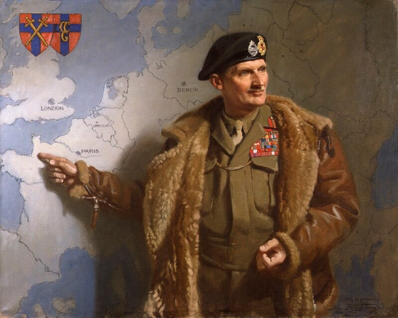

Introduction
Bernard Montgomery, 1st Viscount Montgomery of Alamein, was a senior British Army officer during the Second World War. He is best known for his decisive victories in the North African Campaign and the Battle of Normandy, where his leadership played a crucial role in the defeat of Nazi Germany.
Key Achievements of Bernard Montgomery
- Commanded the British Eighth Army and won the Battle of El Alamein in 1942
- Played a key role in the Allied invasion of Sicily in 1943
- Led the successful Normandy landings (D-Day) and the subsequent campaign in Western Europe
- Served as the British Chief of the Imperial General Staff from 1946 to 1948
Important Events During Montgomery’s Military Career
- 1942: Achieved a major victory at the Battle of El Alamein, which turned the tide in North Africa
- 1943: Commanded the British forces during the Italian Campaign, capturing Sicily
- 1944: Led the British forces during the D-Day invasion of Normandy
- 1945: Played a pivotal role in the final stages of the war in Western Europe
Learn More
For more detailed information about Bernard Montgomery, you can visit this Wikipedia page.
